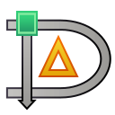
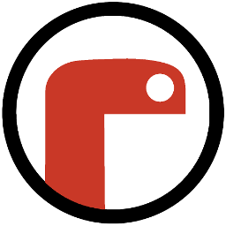

Hello! I'm another person that makes stuff
I'm a member of the GNOME Foundation and a Human Being^
Distro: Fedora DE: GNOME Browser: Firefox Search Engine: Bing^ Indents: Depends^
Projects
Icon Preview is my main contribution to the GNOME Design Tooling initiative which aims to make it easier for designers working with the GNOME platform, available on flathub
| Icon Preview | |
| Design beautiful icons |
Aqabler is an implementation of AQA assembly allowing students to actually 'run' assembly
 |
Aqabler |
| Play with AQA Assembly code |
Dia is a cross-platform diagram editor which I currently maintain
|  | Dia |
| Create Diagrams |
I've contributed to Mu, a great editor for Python with built-in support for the micro:bit and other MicroPython devices
|  | Mu |
| A simple Python editor for beginner programmers |
And many other small hacks I've forgotten about
Things I'm mentioned in
- Made With Mu: Contributor Focus: Zander Brown
- Softpedia: GNOME 3.32 Desktop Environment to Launch with a "Radical New Icon Style"
^: Expect all of two people get that reference
^: Wat? Yes I'm the one person that actually uses bing
^: Generally I'm tabs but for Python & GNOME C I use 4/2 spaces